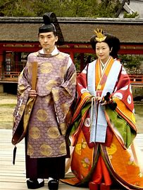

Traditional Japanese fashion represents a long-standing history of traditional culture, encompassing colour palettes developed in the Heian period, silhouettes adopted from Tang dynasty clothing and cultural traditions, motifs taken from Japanese culture, nature and traditional literature, the use of types of silk for some clothing, and styles of wearing a primarily fully-developed by the end of the Edo period.